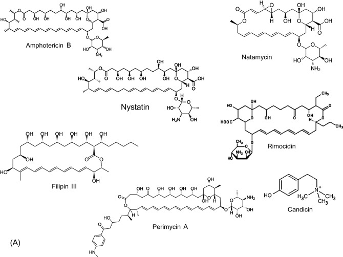

7.9
Antifongiques

1 Mycoses superficielles
Trichophyton
Dermatophyties | Pytirosporoses | Candidoses | ||
Epidermophyton | Malassezia furfur | Candida sp | ||
Teignes | Pytiriasis versicolor | muguet, perleche | ||
Herpes circine | Dermite seborreique | Balanite, vulvovaginite | ||
Acide undecylenique | Sulfure de selenium |
2 Antifongiques d’origine biologique
2.1 Polyenes

2.2 Griseofulvine
Elle est derivee du Benzodihydrofurane C’est un poison du fuseau actif sur tous les dermatophytes
2.2.1 Mecanisme d’action
Inhibition de la synthese des acides nucleiques
inhibition de la synth de la paroi fongique
Blocage de la mitose
Perturbation du trp du cytoplasme vers la peripherie
2.2.2 Effets indesirables
Bien toleree generalement
Cephalees
Vertiges
Confusion
Nausees, vomissements
effets cutanes et photosensibilisation
2.2.3 Interactions medicamenteuses
Deconseillee avec les oestroprogestatifs
Effet antabuse avec l’alcool
2.2.4 Indications
Teignes
Dermatophytoses